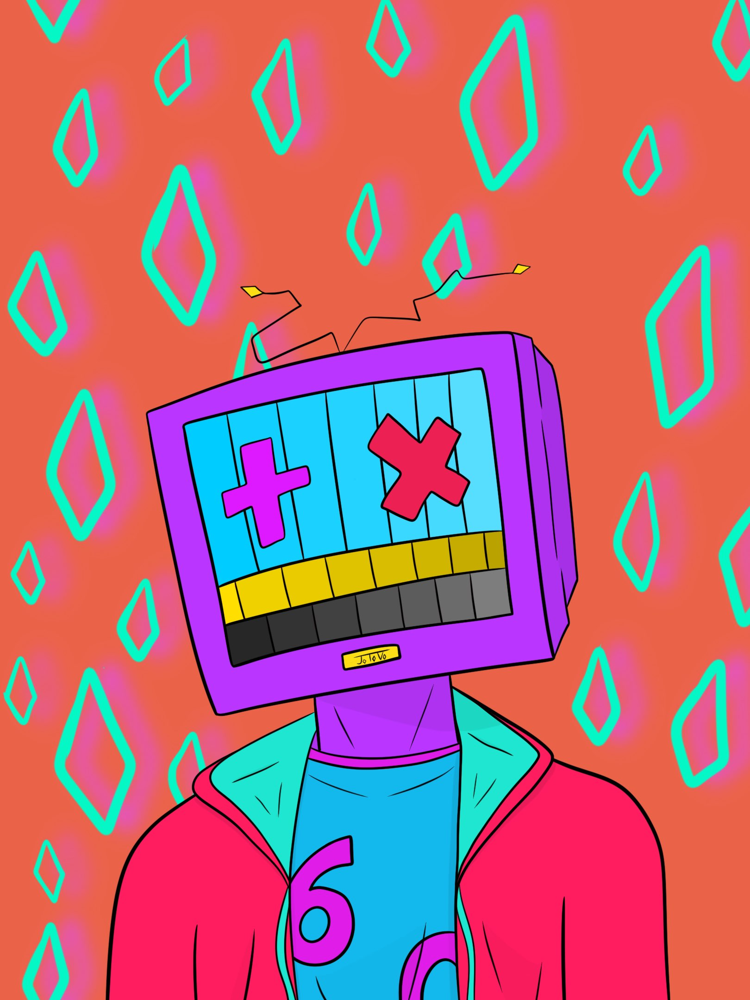

Jaylyn Velez is a passionate creator that is all about designing digital experiences that are both visually stunning and intuitive and always strive to create designs that delight and engage users
As an eager and motivated college student pursuing a Bachelor's degree, I am looking to gain work experience and knowledge to use in real world situations.
High school diploma 2019-2024
Seminole State: College freshman
Graphic Design, effective communication, bilingual, teamwork, creativity, interpersonal skills, adaptability, adobe photoshop and premiere, problem-solving, grill work, dressing food, frying, shake making, drive thru, hosting, cleaning.
Production worker at Steak n' Shake
Ice cream scooper
House cleaning
Amatuer Graphic Designer